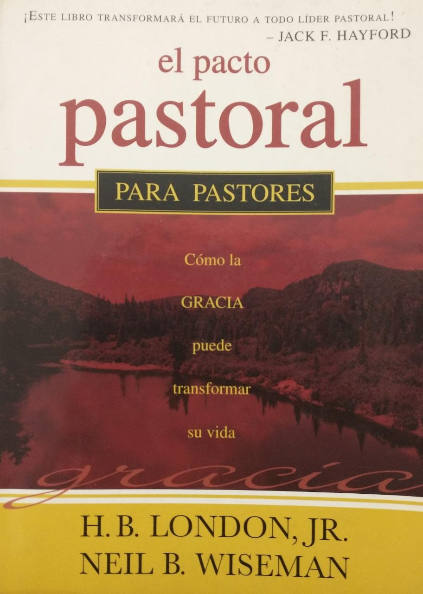
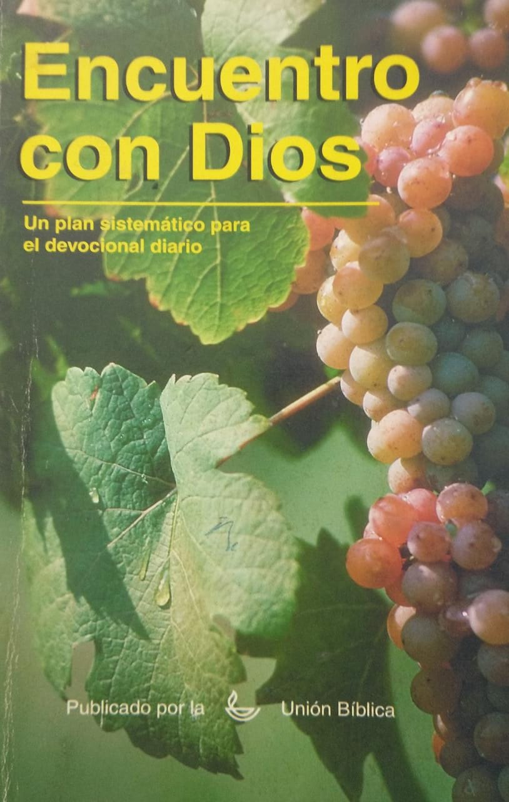
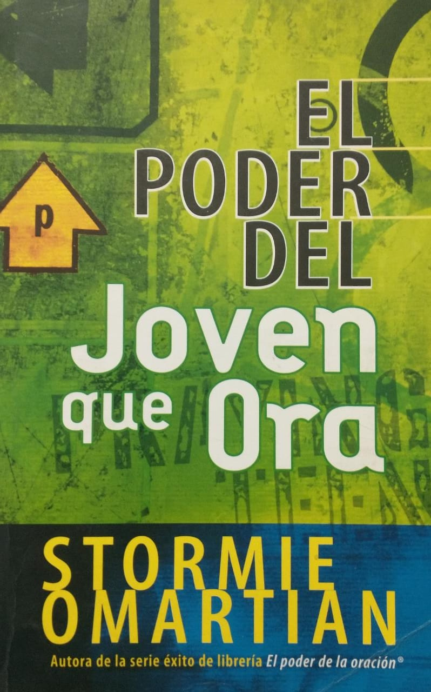
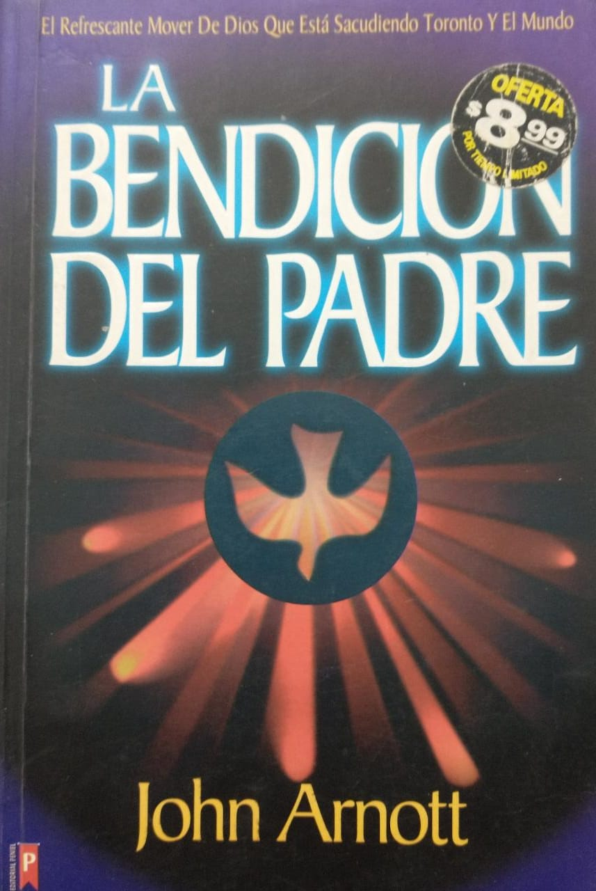

En esta sección encontrarás obras dirigidas al desarrollo personal en cuanto a tu acercamiento con Dios, como sentir su presencia en la vida. La mayoría de los autores son miembros de la iglesia o mismo son los mismos pastores, que explican sus experiencias para poder ayudar a más gente.
Iglesia

El Pacto Pastoral

Encuentro con Dios

El poder del joven que ora
